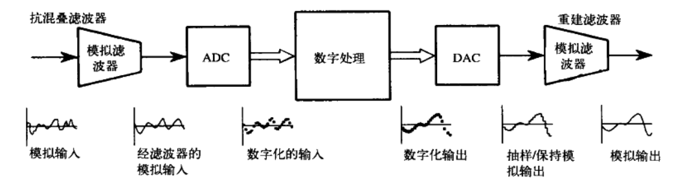

模数转换与数模转换
抽样和量化
将模拟信号转换为数字信号需要抽样和量化两个步骤。
- 抽样：
- 时间从连续转为离散
- 确保在模数转换过程中进入转换器的电压是常量的必要条件
- 量化：
- 信号从连续转为离散
- 将抽样值量化为整数(LSB的个数)
量化对信号来说无非是增加了特定量的随机噪声。噪声的范围在 $\pm 1/2 LSB$ 内，均值为0，
标准差为$ 1 / \sqrt(12) LSB $(约0.29LSB).
从而对于24位的ADC而言, 其转换噪声为$0.29/16777216 \approx -77dB$。
而对于模拟信号AD转换而言，有$\displaystyle e{tol} = \sqrt{e{模拟}^2 + e_{量化}^2}$.
此外，当量化误差不能被当做随机误差处理的时候，量化模型就不是有效的了。例如：当模拟信号在
长时间的变化都在$\pm 1/2 LSB$附近时，量化误差看起来就不像是一个随机噪声了。此时可以通过加抖动，
即叠加少量随机噪声来避免这种情况的发生。
抽样定理
- 适当的抽样：适当的抽样：假如用某种方式对一个连续信号进行抽样，只有以适当的方
式抽样，才能通过抽样信号精确地恢复原始模拟信号。 - 混叠：在抽样过程中原始模拟信号的频率在抽样时完全转变成了另一个频率的现象
抽样定理: 只有当一个连续信号不包含大于抽样率一半以上的频率成分时，才能认为是一个适当的抽样。
脉冲序列：或称$\delta$函数，是沟通连续波形和数组之间的桥梁。
数模转换
- 零阶保持： $sinc$函数
由于数模转换过程中，很难在实际电路中产生$\delta$波形，一般在接收到另一个新的抽样值前保持最后
一个值，称为零阶保持。零阶保持相当于在脉冲序列的频谱上叠加了一$sinc$波形。所以在重建过程中需要
再消除这一$sinc$波形的影响。
模拟信号的分辨率也同样收到噪声和带宽的影响。
用于数据转换的模拟滤波器
DSP系统的原理框图：

DSP技术的未来发展趋势
- 以软件替换硬件
- 多抽样率技术减少对抗混叠滤波器和重建滤波器的需要
- 数字滤波器的设计：从等效的模拟滤波器入手，将其转换为相应的软件
信息编码方式导致的取舍
- 频域编码
- 音频信号取决于频率而不是波形
- 可使用具有陡峭截止特性的切比雪夫滤波器
- 这些滤波器较差的阶跃响应影响波形而不影响结果
- 时域编码
- 尽量保持原有的波形
- 贝塞尔滤波器
多抽样率数据转换
多抽样率技术，即在同一系统中采用1种以上的抽样率。例如：
- 让信号通过有一个简单的
RC低通滤波器，并以 $64kHz$ 进行抽样。产生的数字数据包含我们需要的在 $100Hz$ 到 $3000Hz$ 之间的频带信息，但是也包含无用的在 $3kHz$ 到 $32kHz$ 之间的频率。- 使用 $3kHz$ 的数字低通滤波器，在软件中去除这些无法使用的频率
- 采取丢弃每8个抽样点中的7个的简单方法，对数字数据进行从 $64kHz$ 到 $8kHz$ 的再抽样，即十选一
最终产生的数字数据与经由严格的模拟滤波后直接进行 $8kHz$ 抽样所产生的结果等效
$\Delta-\Sigma$ 模数转换器
电容上的电压与地电平相比较，电路输出数字1时电容上的电压减少，输出数字0时电容上的电压增加。如果输入电压为正，数字输出将会包括更多的1，反之，数字输出包括更多的0. 可以将数据流中相邻的12位合成为一个抽样数据，之后使用一个数字低通滤波器产生原始波形的一个数字化版本，然后经过十选一再次抽样通过丢弃大部分抽样点的方法来减小抽样率。这生成了与直接对原始信号进行抽样相等价的数字信号。
所以，对于这种转换器而言，抗混叠滤波器通常只需要一个简单的RC网络。
$\Delta-\Sigma$转换器的精度：
- 锁存器、电荷注入器的时钟精度
- 注入器的电荷精度